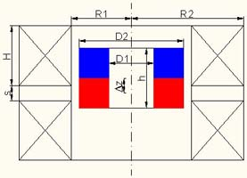
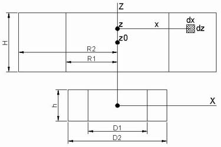
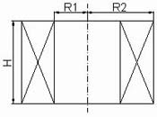
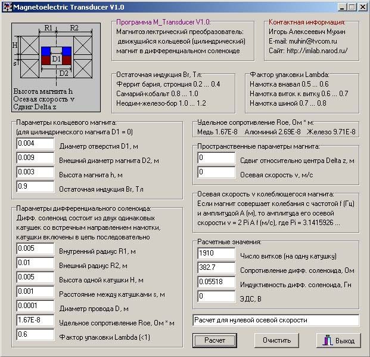

M_Transducer: Программа расчета магнитоэлектрического преобразователя
1. Введение
Магнитоэлектрический преобразователь – преобразователь механического движения постоянного магнита относительно обмотки в электрический сигнал. Может либо выполнять функцию датчика скорости, либо использоваться в качестве электрогенератора. Основная задача - по заданным геометрическим и физическим параметрам системы необходимо рассчитать электродвижущую силу (ЭДС) на выходе.
2. Конструкция преобразователя
Магнитоэлектрический преобразователь состоит из закрепленного на неподвижном основании дифференциального соленоида и соосно с ним расположенного подвижного кольцевого (или цилиндрического) постоянного магнита. Дифференциальный соленоид представляет собой два одинаковых расположенных соосно на некотором расстоянии и последовательно включенных цилиндрических соленоида со встречным направлением намотки. Магнит, как правило, размещается таким образом, что в исходном положении его центр совпадает с центром дифференциального соленоида, но, вообще говоря, центры магнита и дифференциального соленоида могут и не совпадать.

Рис. 2.1. Схема магнитоэлектрического преобразователя.
Постоянный магнит представляет собой кольцо (или цилиндр) внешним диаметром D2 высотой h с отверстием диаметром D1 (или без отверстия). Дифференциальный соленоид состоит из двух одинаковых цилиндрических соленоидов с радиусом отверстия R1 внешним радиусом R2 высотой H, намотанных проводом диаметром D с фактором упаковки l и разделенных прокладкой толщиной s. Расстояние между центрами дифференциального соленоида и магнита Dz (Delta z). Дифференциальный соленоид закреплен неподвижно. Осевая скорость магнита в заданной точке v.
3. Расчет индукции магнитного поля постоянного кольцевого (цилиндрического) магнита
Цилиндрический постоянный магнит с аксиальным направлением намагниченности можно рассматривать как однослойный соленоид с бесконечно тонкой обмоткой, геометрически соответствующей боковой поверхности магнита, по которой течет намагничивающий ток I.
Рис. 3.1. Представление цилиндрического постоянного магнита эквивалентным соленоидом.
Условием эквивалентности магнита и соленоида является равенство их магнитных моментов. Магнитный момент магнита P может быть найден по формуле:
P = M V = M S h, где M – намагниченность магнита, V – его объем, S – площадь сечения, h – высота.
Магнитный момент эквивалентного соленоида:
P = j h S, где j = I/h – линейная плотность намагничивающего тока.
Тогда:
j = M
Для материалов с прямоугольной петлей гистерезиса (феррит бария, феррит стронция, неодим-железо-бор, самарий-кобальт и т. п.):
M ≈ Br/m0, где Br – остаточная индукция, m0 = 4p ∙ 10-7 Гн/м – магнитная постоянная. Таким образом, линейную плотность намагничивающего тока можно выразить приближенной формулой:
j = Br/m0
Кольцевой постоянный магнит с аксиальным направлением намагниченности может быть представлен как два однослойных цилиндрических соленоида с бесконечно тонкой обмоткой, вложенных друг в друга. Соленоид диаметром D2 и высотой h соответствует внешней боковой поверхности магнита, а соленоид диаметром D1 и высотой h – внутренней поверхности отверстия. Намагничивающие токи в соленоидах равны по величине и противоположны по направлению.
Величину и направление вектора магнитной индукции dB в произвольной точке магнитного поля, создаваемого в вакууме (или воздухе) элементом проводника длиной dl с током I, можно найти с помощью закона Био – Савара – Лапласа [6]:

где dl – вектор элемента проводника, численно равный dl и проведенный в направлении тока, r – радиус-вектор, проведенный из этого элемента проводника в рассматриваемую точку поля, r = mod(r). Этот принцип положен в основу программы A_Magnet [1].
4. Расчет потокосцепления соленоида с магнитом и электродвижущей силы
Электродвижущая сила (ЭДС) E соленоида в соответствии с законом электромагнитной индукции Фарадея [6] может быть найдена по формуле:
где Y – потокосцепление соленоида с магнитным полем, t – время.
Формулу (4.1) можно записать в виде:
где z0 = H/2 + s/2 + Dz – расстояние между центрами магнита и соленоида, v – скорость движения магнита.
Дифференциальный соленоид состоит из двух одинаковых соленоидов. При последовательном электрическом и встречном магнитном включении соленоидов общая ЭДС равна сумме ЭДС каждого из соленоидов. Для одного соленоида z0 = H/2 + s/2 + Dz, для другого z0 = H/2 + s/2 – Dz.

Рис. 4.1. К расчету потокосцепления магнита и соленоида.
Для расчета потокосцепления соленоид можно разбить на элементы прямоугольного сечения со сторонами dx ∙ dz (рис. 4.1), найти потокосцепление d2 Y каждого такого элемента, а затем проинтегрировать по сечению обмотки.
где Bz (x1, 0, z) - аксиальная (осевая) составляющая магнитной индукции поля магнита, dN – число витков обмоточного провода в элементе dx ∙ dz, выражаемое через фактор упаковки l и диаметр обмоточного провода D следующим образом:
Тогда:
С учетом этого ЭДС может быть выражена таким образом:
Тогда ЭДС EDIF дифференциального соленоида:
5. Расчет активного сопротивления и индуктивности дифференциального соленоида
Дифференциальный
соленоид состоит из двух одинаковых цилиндрических соленоидов (рис. 5.1), каждый
из которых может быть охарактеризован следующими параметрами:
R1 - внутренний радиус соленоида, м
R2 - внешний радиус соленоида, м
H - высота соленоида, м
D - диаметр обмоточного провода без изоляции (для проводов прямоугольного
сечения производится пересчет по формуле D=(4S/p)1/2,
где S - площадь поперечного сечения провода, м2),
м
Lambda =
l - фактор упаковки
(отношение площади, занятой проводом в поперечном сечении соленоида без учета
изоляции, к площади поперечного сечения соленоида) [12].

Рис. 5.1. Цилиндрический соленоид
Расчет активного сопротивления и индуктивности дифференциального соленоида может быть сделан с использованием решений, заложенных в программу Coil [2], и методики расчета индуктивности системы из двух соосных цилиндрических соленоидов [9].
6. Программа Magnetoelectric Transducer версия 1.0

Рис. 6.1. Внешний вид окна программы Magnetoelectric Transducer (версия 1.0).
Входные данные:
D1
– диаметр отверстия в постоянном магните, м
D2 –
внешний диаметр постоянного магнита, м
h – высота
постоянного магнита, м
Br –
остаточная индукция материала постоянного магнита, Тл
R1 – радиус отверстия в катушках дифференциального соленоида, м
R2 – внешний радиус катушек дифференциального соленоида, м
H - высота каждой из катушек дифференциального соленоида,
м
s –
расстояние между катушками дифференциального соленоида, м
D – диаметр обмоточного провода без изоляции (для проводов прямоугольного
сечения производится пересчет по формуле D=(4S/p)1/2,
где S – площадь поперечного сечения провода, м2),
м
re (Roe)
– удельное электрическое сопротивление материала обмоточного провода, Ом ∙ м
l (Lambda)
- фактор упаковки (отношение площади, занятой проводом в поперечном сечении
соленоида без учета изоляции, к площади поперечного сечения соленоида)
Dz
(Delta z) – сдвиг центра магнита относительно центра
дифференциального соленоида, м
v –
скорость движения магнита в осевом направлении, м/с
Если магнит совершает гармонические колебания в заданной точке (определяется параметром Delta z) с частотой f и амплитудой A, то амплитудное значение скорости в данной точке v определяется по формуле: v = 2 p A f. При подстановке амплитудного значения скорости в программу можно произвести расчет амплитуды ЭДС для случая гармонических колебаний магнита.
Выходные данные:
Число витков одной катушки дифференциального
соленоида
Активное сопротивление дифференциального соленоида (катушки соединены
последовательно, условия нормальные), Ом
Индуктивность дифференциального соленоида (катушки соединены последовательно,
направление намотки встречное), Гн
ЭДС на выходе дифференциального соленоида, В (амплитуда ЭДС для случая
гармонических колебаний при использовании амплитудного значения скорости
магнита)
Расчеты производятся в системе СИ. Результаты выводятся на экран монитора.
После запуска программы можно вводить входные данные и производить расчет нажатием кнопки "Расчет". Входные данные (D1, D2, h, Br, R1, R2, H, s, D, Roe, Lambda, Delta z и v) необходимо вводить, учитывая принятый в операционной системе (ОС) формат разделителя для десятичной дроби – точка или запятая, например, 0.005 или 0,005, либо установите в ОС точку в качестве разделителя. Для удельного сопротивления используется формат X.XXEY, где латинская буква E обозначает основание 10, а Y – степень (например, 1.67E-8 = 1.67 ∙ 10-8 = 0.0000000167).
Для очистки окон с выходными данными следует нажать кнопку "Очистить". Для того, чтобы закрыть программу, следует нажать кнопку "Выход".
7. Демонстрационная версия программы M_Transducer:
Версия 1.0 демо: M_Transducer10d.rar (~81 Кбайт)
Демонстрационная версия программы позволяет рассчитывать параметры магнитоэлектрического преобразователя только для нулевой скорости движения магнита (v = 0). Время одного расчета может составлять до нескольких десятков секунд при использовании компьютера с процессором Pentium-I 200 МГц или аналогичным. Программа может работать с операционными системами (ОС) Windows 3.1, Windows 95, 98 и XP (с другими ОС семейства Windows не проверялась).
Файл M_Transducer10d.rar необходимо распаковать в заранее созданную папку. Упаковка производилась с помощью WinRAR 3.60. Результат распаковки: M_Transducer10d.exe - исполняемый файл программы. После запуска программы можно вводить входные данные в системе СИ и производить расчет нажатием соответствующей кнопки. Проверить правильность расчетов можно по внешнему виду окна программы, приведенному на рис. 6.1.
Скопированные файлы могут быть проверены на отсутствие вирусного кода в режиме on-line [11].
По вопросу получения полной версии программы обращайтесь к автору (см. раздел Контактная информация).
Ссылки:
30.03.2012
Альтернативные источники
энергии
Компьютеры и
Интернет
Магнитные поля
Механотронные системы
Перспективные
разработки
Электроника и
технология